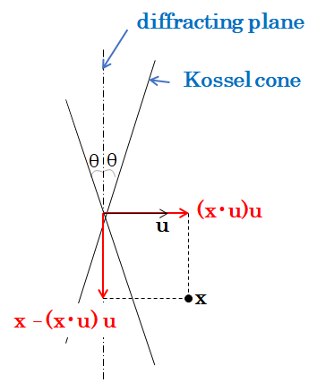

菊池パターンのバンドエッジを表す式
[English / Japanese]
原点をプロジェクションセンターとし、蛍光板がz=1の平面内にくるように、長さの単位を設定する。
以下のベクトルを用いて式を導出する:
- ${\mathbf z} = (0, 0, 1)^T$,
- 逆格子ベクトル ${\mathbf a}^*$,
- ${\mathbf u} = {\mathbf a}^* / | {\mathbf a}^* |$.
バンドセンターは、
回折面に対応する平面${\mathbf a}^* \cdot {\mathbf x} = 0$と
蛍光板${\mathbf z} \cdot {\mathbf x} = 1$の交わりになる。
ブラッグの式$2 d \sin \theta = n \lambda$により、
ブラッグ角$\theta$は
格子面間隔$d = 1/|{\mathbf a}^* |$と関係づけられる。
以下の図のKossel coneに含まれる座標
${\mathbf x}$は、
その${\mathbf a}^*$方向への射影$({\mathbf x} \cdot {\mathbf u}) {\mathbf u}$とその鉛直方向への射影
${\mathbf x} - ({\mathbf x} \cdot {\mathbf u}) {\mathbf u}$を考えたとき、右の等式が成立する。
|

|
$$
\frac{ | ({\mathbf u} \cdot {\mathbf x}) {\mathbf u} |^2 }{ | {\mathbf x} - ({\mathbf u} \cdot {\mathbf x}) {\mathbf u} |^2 } = \tan^2 \theta.
$$
|
|---|
したがって、Kossel coneは以下で定義される円錐面になる:
$$
({\mathbf u} \cdot {\mathbf x})^2 = | {\mathbf x} |^2 \sin^2 \theta.
$$
バンドエッジはこのKossel coneと平面${\mathbf z} \cdot {\mathbf x} = 1$の交わりになる。
簡単のため、蛍光板の座標軸を回転して、${\mathbf u} = (-\cos \sigma, 0, \sin \sigma)$としておく。
${\mathbf u} \cdot {\mathbf x} = 0$より、バンドセンターの方程式は以下に等しい。
$$
x = \tan \sigma.
$$
バンドエッジの方程式は、
$$
(-x \cos \sigma + \sin \sigma)^2 = (x^2 + y^2 + 1) \sin^2 \theta.
$$
すなわち、以下の双曲線になる。
$$
(\cos^2 \sigma-\sin^2 \theta) \left( x - \frac{ \cos \sigma \sin \sigma }{\cos^2 \sigma-\sin^2 \theta} \right)^2 - (\sin^2 \theta) y^2 = \frac{ \cos^2 \theta \sin^2 \theta }{\cos^2 \sigma-\sin^2 \theta}.
$$
さらに整理すると、
$$
\left( \frac{\cos 2 \sigma + \cos 2 \theta}{ \sin 2 \theta } \right)^2 \left( x - \frac{ \sin 2 \sigma }{ \cos 2 \sigma + \cos 2 \theta } \right)^2
- \frac{ \cos 2 \sigma + \cos 2 \theta }{ 2 \cos^2 \theta } y^2 = 1.
$$
今、$\cos 2 \sigma + \cos 2 \theta = \cos 2 \sigma + \cos 2 \theta > 0$は仮定してよい。
バンドエッジと$x$軸の、2つの交点の距離$\sigma_{begin}, \sigma_{end}$がバンド幅に該当する。
さらに以下が成立する。
\begin{eqnarray*}
\tan \sigma_{begin}
&=& \frac{ \sin 2\sigma - \sin 2 \theta }{ \cos 2 \sigma + \cos 2 \theta }
= \frac{ (e^{i(\sigma + \theta)} + e^{-i(\sigma + \theta)})(e^{i(\sigma - \theta)} - e^{-i(\sigma - \theta)}) }
{ i (e^{i(\sigma + \theta)} + e^{-i(\sigma + \theta)})(e^{i(\sigma - \theta)} + e^{-i(\sigma - \theta)}) } = \tan (\sigma - \theta), \\
\tan \sigma_{end}
&=& \frac{ \sin 2\sigma + \sin 2 \theta }{ \cos 2 \sigma + \cos 2 \theta } =
\frac{ (e^{i(\sigma + \theta)} - e^{-i(\sigma + \theta)})(e^{i(\sigma - \theta)} + e^{-i(\sigma - \theta)}) }
{ i (e^{i(\sigma + \theta)} + e^{-i(\sigma + \theta)})(e^{i(\sigma - \theta)} + e^{-i(\sigma - \theta)}) } =
\tan (\sigma + \theta).
\end{eqnarray*}
したがって、$\sigma_{begin} = \sigma - \theta$, $\sigma_{end} = \sigma + \theta$が得られる。
[Back to top]
[Go to the page of the EBSD ab-initio indexing software]
[Go to my research page (list of software)]